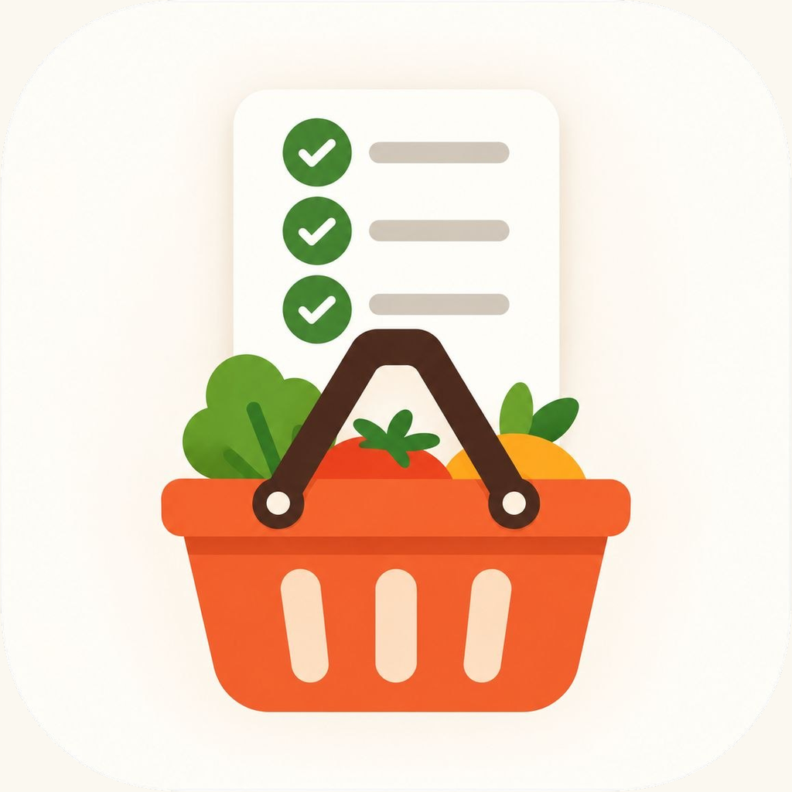

iHambre
Política de privacidad
Última actualización: 8 de octubre de 2026.
iHambre es una aplicación para planificar los menús de la semana y compartir la lista de la compra con las personas de tu casa. Esta página explica qué datos guarda, para qué y cómo puedes controlarlos.
Responsable
[Nombre y apellidos del responsable], contacto: [correo de contacto].
Qué datos guardamos
- Cuenta: tu correo electrónico y tu contraseña, que se guarda cifrada (nadie puede leerla).
- Lo que creas en la app: el nombre de tus casas, los platos con sus ingredientes y notas, los menús de cada semana, la lista de la compra y qué está marcado.
- Pertenencia a casas: en qué casas estás, quién las creó y el código de invitación.
- Datos técnicos: los proveedores que alojan el servicio registran datos técnicos de acceso, como la dirección IP, para su funcionamiento y seguridad.
- En tu móvil: la sesión iniciada y una copia de tus datos para poder verlos sin conexión.
No usamos publicidad ni herramientas de analítica o seguimiento, y no vendemos ni cedemos tus datos.
Para qué y con qué base legal
Usamos los datos únicamente para prestarte el servicio que pides: crear tu cuenta, guardar y sincronizar tus menús y compras, y enviarte los correos necesarios (activar la cuenta y recuperar la contraseña). La base legal es la ejecución del contrato de uso de la app (artículo 6.1.b del RGPD).
Quién más ve tus datos
- Las personas de tu casa ven tu correo y todo lo que se guarda en esa casa. Solo entran quienes tienen el código de invitación; quien creó la casa puede quitar a alguien y cambiar el código.
- Proveedores que tratan los datos por cuenta de iHambre: Supabase (base de datos y cuentas; servidores en la Unión Europea, Irlanda), Resend (envío de correos) y GitHub (alojamiento de la web). Si alguno trata datos fuera del Espacio Económico Europeo, lo hace con las garantías que exige el RGPD.
- Apple y Google, si descargas la app desde sus tiendas, tratan los datos de la descarga y de los pagos según sus propias políticas.
Cuánto tiempo
Mientras tengas la cuenta. Al borrarla, sus datos se eliminan en el momento, salvo las copias técnicas de los proveedores, que desaparecen en sus plazos habituales.
Cómo borrar tu cuenta y tus datos
Desde la app: menú de tu cuenta (arriba a la derecha) → Cuenta y privacidad → Borrar mi cuenta. Se borran tu cuenta y tu acceso al momento. Las casas en las que seas la única persona se borran con todos sus platos, menús y compras; las compartidas siguen para las demás personas, sin tu cuenta.
Si no puedes entrar en la app, escribe a [correo de contacto] desde el correo de tu cuenta y la borraremos.
Tus derechos
Puedes pedir acceso a tus datos, corregirlos, borrarlos, limitar su uso, oponerte o recibirlos en un formato portable escribiendo a [correo de contacto]. Si crees que no se respetan tus derechos, puedes reclamar ante la Agencia Española de Protección de Datos (www.aepd.es).
Menores
iHambre no está dirigida a menores de 14 años.
Cambios
Si esta política cambia de forma importante, lo avisaremos en la app.